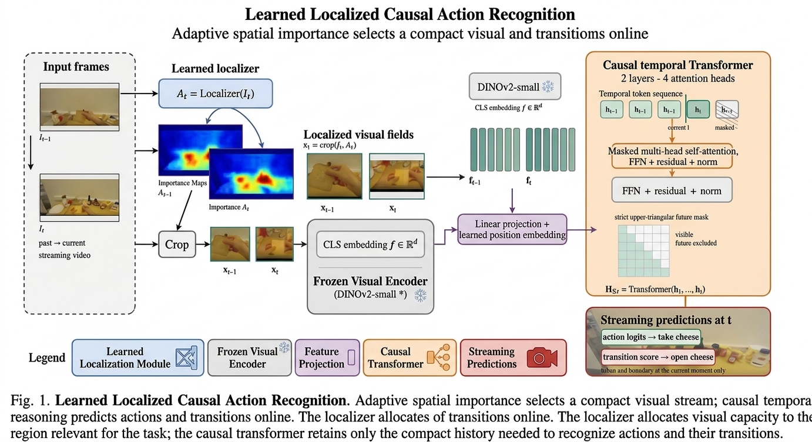

EgoFocus: Localised Egocentric Vision
Abstract
EgoFocus performs online action recognition by learning where to look and how to retain the evidence needed to interpret an action as it unfolds. At each moment, a learned spatial-importance module identifies the hand–object region most relevant to the current task. Instead of encoding the entire egocentric frame, the model builds a compact sequence of localized visual observations.
Each localized observation is encoded into a visual feature and passed to a causal temporal Transformer. The Transformer receives only the evidence observed up to the current moment: future frames are structurally masked. This allows the model to recognize the ongoing action while identifying the transitions through which one action changes into the next. By concentrating computation on task-relevant visual evidence, the approach reduces the effective visual context without discarding the temporal structure required for action recognition.
Method
Learned spatial allocation
A first-person frame contains much more than the evidence needed for the current action: static surfaces, background objects, and unrelated parts of the scene can dominate the visual input. Our localization module learns a spatial-importance distribution over each frame and converts it into a task-dependent localized visual field.
The allocator is trained jointly with the recognition objective. Regions that help explain the current action and the change in action state receive higher importance, while irrelevant background is suppressed. Localization is therefore part of the recognition problem: the model learns to allocate visual capacity to the evidence that matters for the task at the current moment.
Localized causal action recognition
Each incoming egocentric frame is converted into a spatial-importance map that identifies the hand–object region most relevant to the ongoing task. The model selects this localized visual field dynamically, allowing attention to move as the interaction changes.
Our localization module learns a spatial-importance map for every incoming frame. The map assigns higher relevance to regions that provide evidence for the current interaction and lower relevance to surrounding context. A localized visual field is then selected from this importance map and used as the input to the visual encoder.
Causal transformer
The token sequence is processed by a two-layer, four-head causal Transformer encoder. A strict upper-triangular attention mask prevents the representation at time t from accessing any observation after t. The model may use the current crop and its localized history, but it cannot use future frames to resolve the current action.
This compact causal stream removes visual context that is not relevant to the interaction while preserving the temporal evidence needed for action recognition.

Transition modeling
In addition to predicting the current action, the model estimates whether the localized interaction is changing at the current timestep. The causal Transformer produces a representation ht from the localized visual history available up to time t. A transition head uses this representation, together with the change from the previous timestep, to produce a boundary score:
Results
Experiments use EGTEA with leave-one-subject-out evaluation: each model trains on three subjects and is tested on the held-out subject. Features are frozen DINOv2-small vectors sampled every 15 frames; both models receive identical features, labels, and splits, and are trained for 250 epochs.
| Held-out subject | Frame accuracy | Causal Transformer accuracy | Frame balanced accuracy | Causal Transformer balanced accuracy |
|---|---|---|---|---|
| S1 | 73.86 | 79.22 | 52.28 | 64.88 |
| S2 | 71.03 | 79.92 | 51.32 | 69.48 |
| S3 | 63.01 | 81.33 | 43.01 | 64.47 |
| S4 | 81.04 | 99.50 | 54.64 | 83.42 |
| Macro mean | 72.24 | 85.00 | 50.32 | 70.57 |
Table 1. Online action recognition on EGTEA (percentages; higher is better).
The causal Transformer improves macro action accuracy from 72.24% to 85.00% and macro balanced accuracy from 50.32% to 70.57%. The improvement is consistent across all held-out subjects and is especially pronounced for balanced accuracy, indicating that causal temporal context helps distinguish actions beyond what is available in an individual localized observation.
| Held-out subject | Full-frame accuracy | Restricted accuracy | Full balanced accuracy | Restricted balanced accuracy |
|---|---|---|---|---|
| S1 | 81.20 | 82.50 | 66.20 | 67.50 |
| S2 | 48.50 | 53.20 | 40.50 | 43.20 |
| S3 | 83.80 | 84.50 | 67.80 | 68.40 |
| S4 | 99.60 | 99.40 | 84.80 | 84.20 |
| Macro mean | 78.28 | 79.90 | 64.83 | 65.83 |
Table 2. Full-frame vs hand-restricted (localized) input, same causal Transformer (percentages; higher is better).
Restricting the input to task-relevant hand–object evidence improves macro accuracy by 1.62 percentage points and macro balanced accuracy by 1.00 percentage point, while using the same causal temporal model. The restricted representation is better on three of four held-out subjects. This suggests that compact task-relevant visual evidence can preserve, and in most cases improve, online recognition relative to full-frame context.